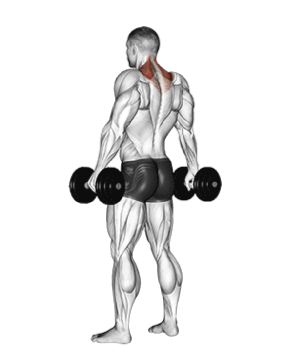
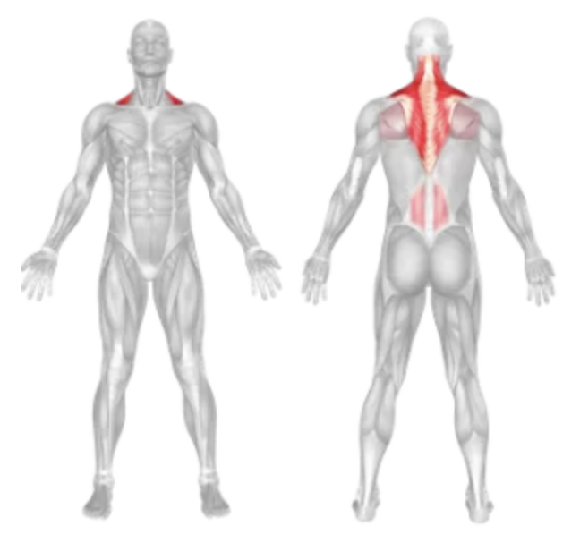
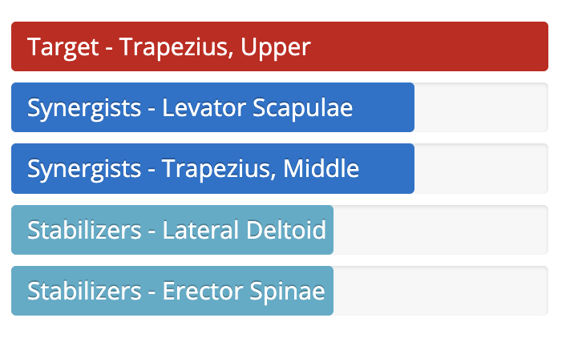

Dumbbell Shrug
Setup
Stand upright with a dumbbell in each hand, arms fully extended by your sides, palms facing your body.
Keep your feet shoulder-width apart and your core engaged for stability.
Maintain a slight bend in your knees and keep your back straight.
Execution
Shrug:
Elevate your shoulders straight up towards your ears as high as possible.
Hold:
Pause briefly at the top for maximum contraction of the trapezius muscles.
Lower:
Slowly lower your shoulders back to the starting position.
Repeat:
Perform the desired number of reps with controlled movement.
Tips for Effectiveness
Keep arms straight:
Avoid bending your elbows to isolate the traps.
Control the movement:
Don’t use momentum—lift and lower the shoulders deliberately.
Breathe properly:
Exhale when shrugging up and inhale when lowering.
Keep neck relaxed:
Don’t tense or lift your neck during the shrug.

Benefits of Dumbbell Shrugs
Trapezius Development:
Strengthens and sculpts the upper trapezius muscles.
Improved Posture:
Helps maintain proper shoulder alignment and posture.
Enhanced Shoulder Stability:
Supports shoulder joint function and stability.
Neck Strength:
Contributes to a stronger neck and upper back area.
Muscles Worked in Dumbbell Shrugs


Do you want to change the language of this page?
English
Malayalam
Tamil
Hindi